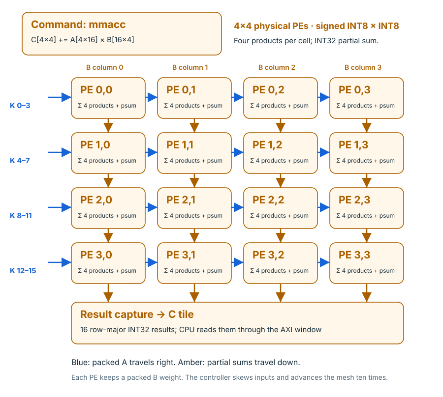

Step through a small example
The interactive PE explorer explains operand movement and partial sums. It is a teaching model, distinct from recorded RTL evidence.
Open PE explorer →Sixteen processing elements compute small tiles, while a C library assembles those tiles into larger matrix products.
We reuse the integer MAC, processing element and mesh RTL from Quadrilatero. Our integration adds the tile buffers, scheduling controller, AXI target and custom command path. Each PE computes a packed dot product of four signed byte pairs and adds an INT32 partial sum.

| Property | Current implementation |
|---|---|
| Array | 4 × 4 = 16 physical PEs |
| Per PE | Four INT8 products + INT32 accumulation |
| Operation | C[4][4] += A[4][16] × transpose(BT[4][16]) |
| Storage | A: 64 bytes; BT: 64 bytes; C: 64 bytes |
| Output layout | Row-major INT32, modulo 2^32 |
| Scheduling | 10 mesh advances, then final capture; 12 observed issue-to-done cycles |
| mzero | Clear all sixteen C values |
| mmacc | Accumulate one K=16 tile; return scalar status 0 |
| Larger dimensions | C library tiles M/N by 4 and K by 16; zero-pads incomplete tiles |
The CPU writes operands to the uncached AXI window at 0xE0000000. A starts at offset 0x100, BT at 0x140, and C at 0x180. The engine performs no DMA. Software copies results back to ordinary RAM for subsequent scalar or RVV work.
.insn r 0x2b, 0, 0, rd, x0, x0 # mzero
.insn r 0x2b, 0, 1, rd, x0, x0 # mmacc
LLVM’s assembler already supports .insn, so the application needs no compiler modification. The hardware recognizes these two encodings; reserved encodings trap. This is a custom ISA contract.
The interactive PE explorer explains operand movement and partial sums. It is a teaching model, distinct from recorded RTL evidence.
Open PE explorer →The matrix-wave command produces FST, a compact VCD and per-command arithmetic checks from real simulation signals.
Waveform commands ↗